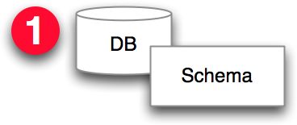
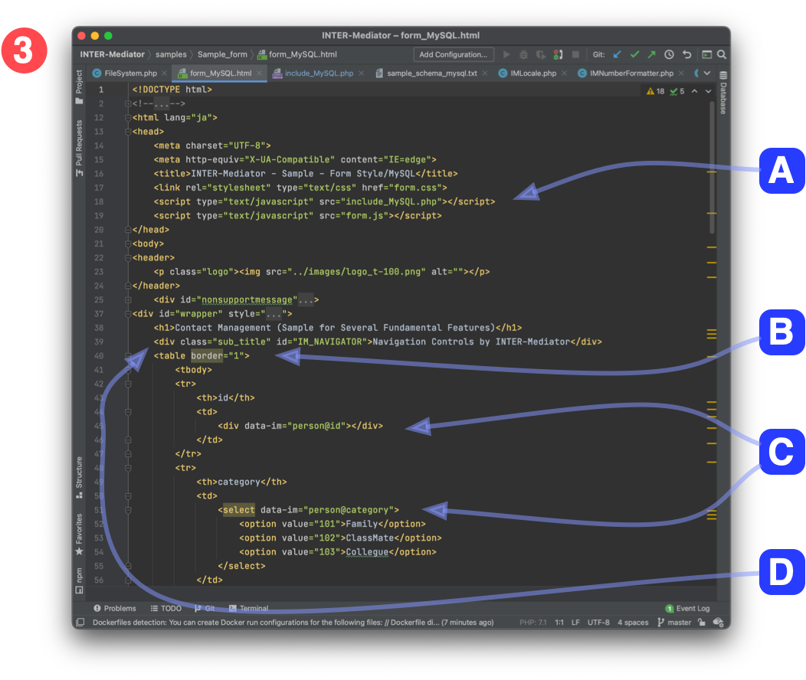
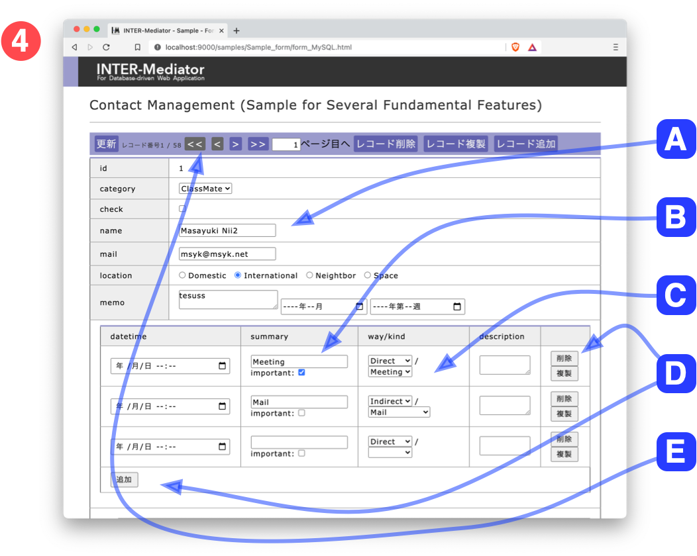

最初に行うことは、データベースを用意することです

スキーマ等を定義してデータベースにテーブルを用意します。もちろん、テーブルやビューなどを、要求や仕様に応じて作成しておきます。
データベースの情報を記述した「定義ファイル」をPHPファイルとして作成します

定義ファイルの作成のポイントは以下の通りです。
- [2-A]テーブル名やキーフィールド名など、データベース情報を記述します。
- [2-B]データベースの接続情報を記述します。
- [2-C]IM_Entry関数をコールします。
ユーザインタフェースとなるHTMLファイル（ページファイル）を作成します

HTMLページを通常とおりに作成をします。このとき、たとえば表なら、TBODYタグ要素の内容がデータベースのレコードの数だけ繰り返します。
- [3-A]ヘッダ部で定義ファイルをscriptタグで読み込みます。
- [3-B]タグのclass属性に、「IM[テーブル名@フィールド名]」などの形式で、どのテーブルのどのフィールド値を取り込むのかを指定します。
- [3-C]INTERMediator.construct関数を呼び出す事で、3-Bで指定した内容に応じてタグの値や属性値にデータベースの値が挿入されます。bodyタグのonload属性で指定すれば、ページを表示したときにデータベースの値を取り出してページに設定します。
データベースの内容を取り込んだページが表示されます

Webブラウザでページファイルを開きます。ファイルに記述された設定をもとに自動的にデータベースの内容がページに表示されます。
- [4-A]inputタグにデータベースの値が設定されてます。この値をページ内で変更すれば、データベースに書き戻されます。
- [4-B]1対多の関係にあるテーブルが複数の行に展開されています。
- [4-C]別のフィールドの値に応じてポップアップメニューの選択肢が違うといった展開も可能です。
- [4-D]繰り返されたレコードに対しての削除や、繰り返しレコードを追加するボタンを設けることも可能です。
- [4-E]ナビゲーションバーを表示して、次や前のレコードに移動したり、レコードの追加や削除の機能を利用できます。